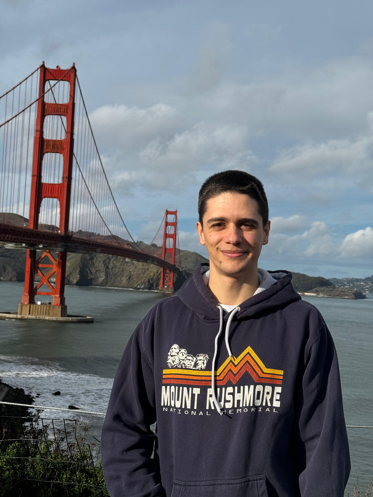

Building tools
that turn data
into insight
Engineering professional specialising in purpose-built analysis tools, interactive data visualisations, and operational dashboards for semiconductor metrology.

I'm Alexis - an engineering professional with over 7 years of experience in high-precision sensing technology. I currently serve as Customer Support Supervisor at Infinitesima, where I independently lead service operations across Asia for advanced atomic force microscopy systems.
Beyond hands-on field work, I develop purpose-built analysis scripts, data visualisation tools, and operational dashboards that help engineering teams interpret complex measurement data, enabling faster diagnosis and deeper insight across service and production operations.
My background in Civil Engineering and Building Information Modelling gives me a strong foundation in data management, systems thinking, and translating technical complexity into practical, user-friendly solutions.
- United Kingdom · passport holder
- Cyprus · passport holder (EU citizen, full right to work across the EU)
- Taiwan · 3-year Gold Card (valid through 2029)
AAFM Dashboard
The problem. Every analysis we ran lived as a standalone Python script. Engineers who weren't comfortable in a terminal either asked someone else to run it or just didn't run it, and the outputs ended up scattered across folders.
What I built. A Flask dashboard that wraps every script behind a button, with consistent inputs, inline results, and a shared database underneath. Because everything now routes through one place, I could add tool time tracking, throughput trends, and brand-new metrics that no previous script had ever reported - the platform made those analyses possible, not the other way round.
Result. Non-Python users can run the full analysis suite themselves. We now track signals we couldn't see before, which is already feeding back into production-quality decisions on the tools.
3D Interactive Visualiser
The problem. The existing analysis scripts output flat 2D images. That's fine for a quick sanity check, but subtle spatial correlations between components were getting lost - you'd look at two plots side by side and still not see the relationship.
What I built. An interactive 3D viewer that takes the same underlying measurement data, renders it as a manipulable surface, and - this is the important part - lets you layer two analysed components into the same graph. Pan, rotate, adjust Z-exaggeration, fade one layer against the other.
Result. Engineers now draw conclusions they couldn't draw from the 2D version, spotting when two apparently separate issues are actually the same spatial fault expressed differently. The viewer is becoming the default way we look at multi-component measurements.
Pattern Recognition
The problem. The tool I was working on relied on a National Instruments computer-vision licence, a four-figure fee per tool. Each analysis run also needed a trained engineer at the machine for about an hour to process the output.
What I built. I set out just to prove the pattern-recognition step could be reproduced in Python using OpenCV - template matching, multi-scale feature extraction, adaptive thresholding, sub-pixel localisation. It worked, so I kept going and wrote a fresh analysis script that consumes the Python pipeline's output and produces the engineering report end-to-end.
Result. We drop the four-figure licence on every tool that adopts it, and we claw back at least an hour of engineer time per analysis. Net gain per tool, per analysis cycle, is measurable and recurring.
Combined Analysis Suite
One pass, many answers. Runs every CV and statistical module the team needs in a single invocation, replacing a fragmented toolchain with one coherent report.
Positioning Accuracy & Repeatability
Catches stage drift and repeatability issues before they show up in customer data , error distributions, trend plots, and visual reports generated straight from raw run logs.
Image Quality Comparison
Automatic regression detection against golden reference images , flags quality drift after PM or software changes without a human sitting at a monitor diff-checking outputs.
Throughput Timing Analysis
Parses raw timing logs into the one chart that matters: which step is slowest, and is it getting worse? Starting point for every throughput conversation we have.
PM Report Generator
Turns a half-day of report assembly into a one-command export , branded PowerPoint decks generated straight from PM script outputs, ready for customer delivery.
Probe Life & Health Tracker
Replaces guesswork about probe condition with a documented per-probe history , usage, signal strength, and pixel consumption tracked over time so replacement decisions are evidence-based.
Data Analysis & Visualisation
Python, Pandas, NumPy, Plotly, Matplotlib - turning raw measurement data into actionable insights.
Web Applications
Flask, HTML, CSS, JavaScript - developing dashboards and browser-based tools for engineering teams.
Precision Engineering
AFM commissioning, calibration, preventive maintenance - high-precision semiconductor metrology systems.
Technical Training
Documentation, SOPs, training programmes - upskilling engineers on complex systems.
I'm always open to discussing engineering challenges, data visualisation, or new opportunities.